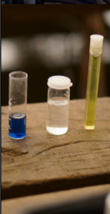
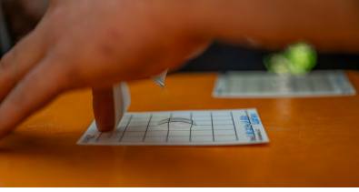
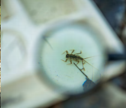
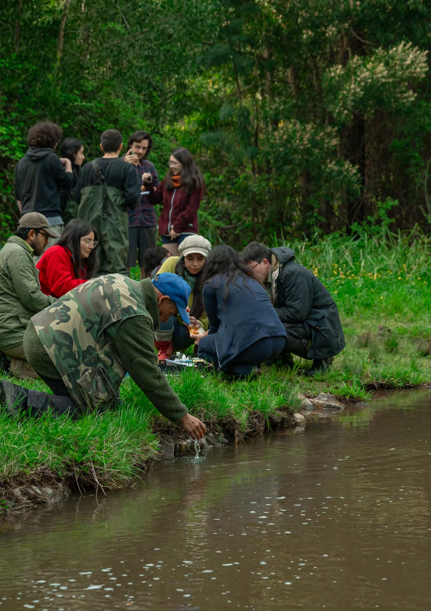
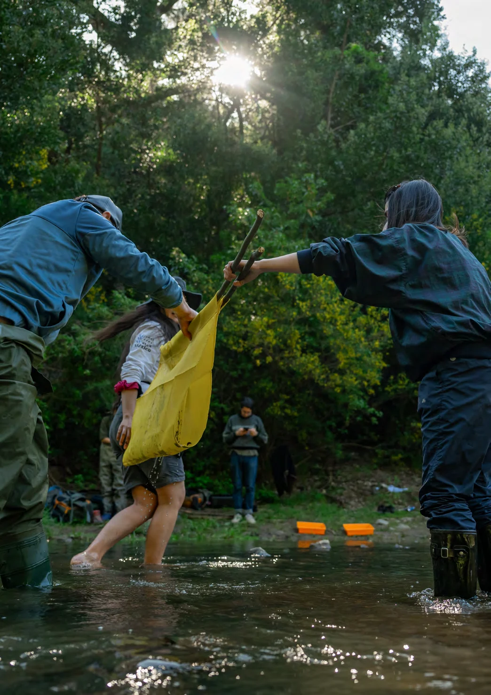
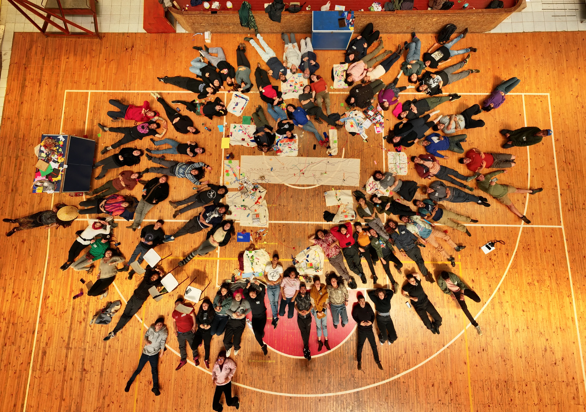
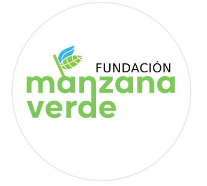

Método 01
Monitoreo fisicoquímico
Evalúa variables como pH, temperatura, turbidez, alcalinidad, dureza y oxígeno disuelto para comprender el estado del agua.
Global Water Watch Chile articula una red de personas y organizaciones que monitorean ríos, lagunas, lagos y humedales desde sus territorios, con metodologías compartidas y aprendizaje colectivo.

Evalúa variables como pH, temperatura, turbidez, alcalinidad, dureza y oxígeno disuelto para comprender el estado del agua.

Utiliza tarjetas de cultivo para observar bacterias indicadoras, incluyendo E. coli, según protocolos estandarizados.

Observa organismos bentónicos para identificar condiciones ecológicas del ecosistema y complementar la lectura del cuerpo de agua.
Esta sección desarrolla una muestra pública inicial construida a partir de los documentos compartidos. La unidad pública es el cuerpo de agua: no la agrupación, ni el voluntario individual. Cuando la publicación esté autorizada, esta muestra podrá crecer con más capas, filtros y series comparables.
La historia de GWW Chile comienza con una inquietud concreta: cómo generar información independiente, comprensible y útil para las comunidades que conviven con sus cuerpos de agua.
En 2019, una solicitud nacida en torno a la laguna Antihuala, en Los Álamos, llevó a Fundación Manzana Verde a investigar métodos de monitoreo comunitario. Esa búsqueda abrió un diálogo con Global Water Watch México y, posteriormente, con el programa internacional de Auburn University.

Aprender juntos, conocer desde el lugar · Memoria GWW Chile 2024La memoria audiovisual y escrita permite reconocer a quienes han sostenido la red, los lugares que se han observado y los aprendizajes que surgen del trabajo territorial.

2024DOCUMENTOS Y TRABAJO EN TERRENO
Historia, certificaciones, metodologías, red territorial y primer encuentro nacional de monitores.
Leer memoria publicada ↗
ArchivoREGISTROS Y VOCES DEL TERRITORIO
Espacio previsto para incorporar los videos originales, con sus créditos y permisos de publicación.
GWW Chile forma parte de una historia de intercambio y colaboración que conecta comunidades, equipos técnicos e instituciones. Esta versión incorpora los logos de Fundación Manzana Verde y Global Water Watch Chile entregados para el prototipo.

Fundación Manzana VerdeConocer, monitorear y cuidar los cuerpos de agua requiere aprendizaje, acompañamiento y trabajo compartido.